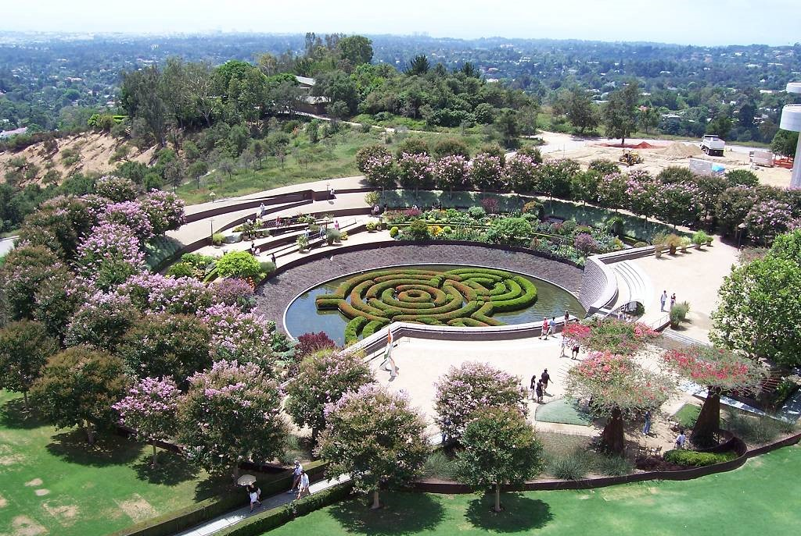
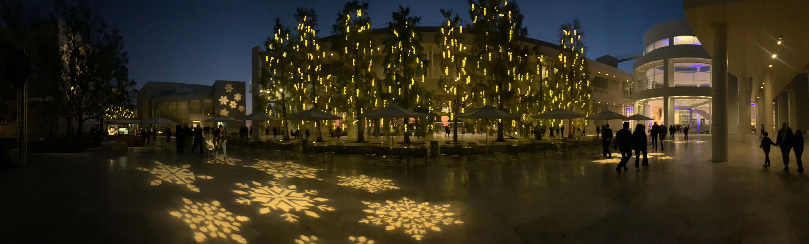
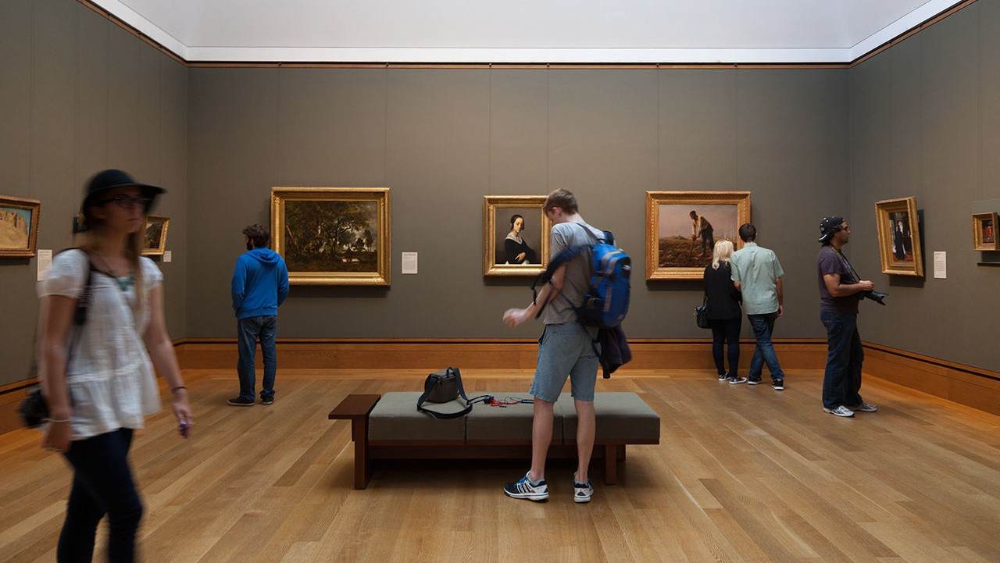
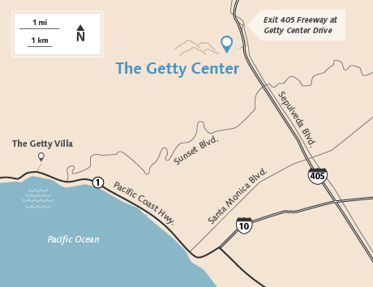

J. Paul Getty Museum

The J. Paul Getty Museum, commonly referred to as the Getty, is an art museum in Los Angeles, California housed on two campuses: the Getty Center and Getty Villa.
The Getty Center is located in the Brentwood neighborhood of Los Angeles and features pre-20th-century European paintings, drawings, illuminated manuscripts, sculpture, decorative arts, and photographs from the inception of photography through present day from all over the world. The original Getty museum, the Getty Villa, is located in the Pacific Palisades neighborhood of Los Angeles and displays art from Ancient Greece, Rome, and Etruria.
A suite of interactive multimedia tools called GettyGuide allows visitors to access information about exhibitions. Within the Museum, the GettyGuide multimedia player provides commentary from curators and conservators on many works of art.
Admission
Admission to the Getty Center is always free. Parking rates vary.
More than 15 people in your group? Please make a group reservation.Hours
The Getty Center is closed until further notice to support emergency response to coronavirus (COVID-19).
Location
The Getty Center
1200 Getty Center Drive
Los Angeles, CA 90049-1687
Contact Information
Phone: +1 (310) 440-7330
Fax: +1 (310) 440-7751
E-mail: (for general Museum inquiries) gettymuseum@getty.edu